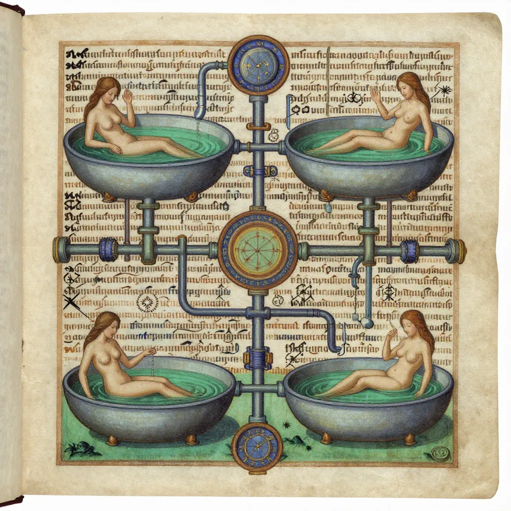

Voynich Manuscript: The 600-Year-Old Book That No One on Earth Can Read

The Voynich Manuscript — a 240-page illustrated codex written entirely in an unknown script that has defied every attempt at decipherment for over 600 years. Radiocarbon dated to 1404–1438, it sits in Yale University’s Beinecke Library, silently mocking the world’s best cryptographers.
In the climate-controlled vault of the Beinecke Rare Book and Manuscript Library at Yale University, there sits a book that no one alive can read. It is approximately 240 pages long, written on vellum — calfskin parchment — in a script that exists nowhere else in the world, in a language that matches no known tongue, and illustrated with images of plants that do not grow on Earth, star charts that correspond to no known sky, and naked women bathing in elaborate networks of green pools connected by pipes that resemble nothing in any medieval medical text. The book is known as the Voynich Manuscript, catalogued as MS 408, and it has been defying the best minds in cryptography, linguistics, and medieval studies for over a century. It has been examined by codebreakers from the National Security Agency, analyzed by computational linguists using machine learning algorithms, subjected to radiocarbon dating, and scanned with multispectral imaging. No one has ever deciphered a single word.
The manuscript is named after Wilfrid Voynich, a Polish-American rare book dealer who claimed to have discovered it in 1912 at the Jesuit college at Villa Mondragone, a villa near Rome, where it had apparently been sitting in a chest of books that the Jesuit order was discreetly selling to raise funds. Voynich recognized immediately that the manuscript was extraordinary — its strange script, its vivid illustrations, its total incomprehensibility — and he spent years trying to have it decoded, enlisting the help of some of the most prominent cryptographers of the early twentieth century. None succeeded. In the century since Voynich's discovery, the manuscript has passed through some of the most distinguished hands in European intellectual history, been the subject of hundreds of scholarly papers and dozens of attempted decipherments, and become arguably the most famous unsolved puzzle in the history of written language. It is a book that was clearly created with enormous care, over a long period, by someone who knew what they were doing. It is also, quite possibly, completely meaningless.
A Book in Five Acts: The Strange Sections of the Voynich Manuscript
The Voynich Manuscript is not a random collection of pages. It is organized into at least five distinct sections, each identifiable by its illustrations and the apparent subject matter of the text that accompanies them. The division suggests that whoever created the manuscript had a coherent purpose — a book of knowledge organized by topic, like a medieval encyclopedia or scientific compendium. What that purpose was, however, remains as mysterious as the text itself.
The largest section is the botanical section, which contains approximately 113 illustrations of plants, each accompanied by paragraphs of the unknown text. The illustrations are detailed and skillfully painted, but the majority of the plants depicted do not correspond to any known species. Some appear to be composites — parts of different plants assembled into imaginary wholes. Others resemble real plants but with crucial features altered or exaggerated. The mismatch between the quality of the illustrations and the unidentifiability of the plants has been one of the manuscript's most enduring puzzles: if the artist was skilled enough to paint these images with such precision, why do the plants not exist?
The astronomical section contains drawings of stars, suns, moons, and zodiac symbols, along with circular diagrams that resemble star charts or cosmological maps. Some of the zodiac symbols — Aries, Taurus, Gemini, and others — are recognizable, drawn in a style consistent with medieval European tradition. But the star arrangements do not correspond to any known constellation, and the accompanying text remains illegible. The balneological or biological section is perhaps the most visually striking: it depicts dozens of nude women bathing in pools of green liquid, connected by an elaborate network of pipes, tubes, and channels that resemble a plumbing system or an anatomical diagram. The women are shown in various poses — standing, sitting, lying in the pools — and the overall impression is of a medical or alchemical treatise describing the properties of water, baths, or bodily fluids. The pharmacological section shows drawings of roots, leaves, herbs, and apothecary jars, suggesting a section on medicine or herbal remedies. The final section, often called the recipes section, consists of short paragraphs of text marked by star- or flower-like symbols in the margins, suggesting a collection of instructions — recipes, formulas, or prescriptions.
📚 The Perfect Book: No Corrections, No Errors, No Second Thoughts
One of the most striking features of the Voynich Manuscript is what is not there: there are no crossed-out words, no corrections, no revisions, and no visible signs of editing anywhere in the entire 240-page document. Every page is written with a confident, flowing hand, as if the scribe were copying from a clear original or writing fluently in a script they knew well. This absence of errors has been cited by some researchers as evidence that the manuscript is a deliberate forgery — a fake created to look like a real book, written by someone who was not actually composing text but merely producing meaningless marks in a convincing pattern. Others argue that the lack of corrections is consistent with a skilled scribe copying from an earlier version, or with someone writing in a script and language they had already mastered. The debate remains unresolved, but the pristine quality of the writing is one of the manuscript's most unsettling features — a book that looks like it was written by someone who knew exactly what they were saying, even though no one else ever has.

A botanical page from the Voynich Manuscript showing an unidentifiable plant with strange blue-green foliage. Despite centuries of study, botanists have been unable to match the majority of the manuscript’s 113 plant illustrations to any known species on Earth.
The Journey of a Ghost: Six Centuries of Mysterious Ownership
The documented history of the Voynich Manuscript is almost as mysterious as its contents. Radiocarbon dating conducted by the University of Arizona in 2009 dated the vellum pages to between 1404 and 1438 (with 95% confidence), placing the manuscript's creation firmly in the early fifteenth century, during the late medieval period. The ink and paint are consistent with this dating. But the first confirmed record of the manuscript's existence does not appear until the seventeenth century, leaving a gap of roughly two hundred years in which the book's whereabouts are entirely unknown.
The earliest likely owner, based on a letter found tucked inside the manuscript, was Emperor Rudolf II of Bohemia (1552-1612), the Holy Roman Emperor and one of the greatest art collectors in European history. Rudolf was obsessed with the occult, alchemy, and the arcane, and his court in Prague was a gathering place for astrologers, alchemists, and mystics. According to the letter, Rudolf purchased the manuscript for 600 gold ducats — an enormous sum, equivalent to tens of thousands of modern dollars — and believed it to be the work of the thirteenth-century English philosopher and scientist Roger Bacon. That attribution is now considered almost certainly incorrect (the radiocarbon dating places the manuscript two centuries after Bacon's death), but Rudolf's willingness to pay such a price indicates that the manuscript was already considered extraordinary and potentially valuable in the early seventeenth century.
From Rudolf's court, the manuscript is believed to have passed to Jacobus de Tepenec, a pharmacist and courtier, and then to Georg Baresch, a Prague alchemist who owned the manuscript in the mid-seventeenth century and was apparently as baffled by it as everyone who came after him. Baresch wrote to the prominent Jesuit scholar Athanasius Kircher in Rome, asking for help deciphering the text, and may have sent the manuscript to Kircher's collection. It next appears in the possession of the Society of Jesus (Jesuit order) in Rome, where it remained, largely forgotten, until Wilfrid Voynich's alleged discovery in 1912. After Voynich's death, the manuscript passed to his widow, the writer Ethel Voynich, and then through several private collectors before being donated to Yale University's Beinecke Rare Book and Manuscript Library in 1969, where it has resided ever since as MS 408.
🔬 What Carbon Dating Revealed — And What It Didn't
In 2009, a team led by the University of Arizona performed radiocarbon dating on four small samples of the Voynich Manuscript's vellum pages. The results were precise: the parchment dated to between 1404 and 1438 with 95% confidence. The finding was significant for several reasons. It proved that the manuscript was not a modern forgery — the vellum was genuinely medieval. It disproved the long-standing theory that the manuscript was the work of Roger Bacon, who died in approximately 1292, over a century before the earliest possible date of the vellum. And it placed the manuscript's creation in the early fifteenth century, during a period of intense intellectual activity in Central Europe — the era of the Council of Constance, the Hussite Wars, and the early Renaissance. However, radiocarbon dating can only establish the age of the material — the vellum — not the age of the writing. In theory, someone could have obtained blank fifteenth-century vellum and written the manuscript centuries later. Most researchers consider this unlikely, given the consistency of the ink and paint with medieval materials, but the possibility cannot be entirely ruled out.
The Elizabethan Connection: John Dee and the World of Occult Science
One of the most intriguing theories about the manuscript's history involves Dr. John Dee (1527-1608/1609), the Elizabethan mathematician, astrologer, alchemist, and court magician to Queen Elizabeth I. Dee was one of the most learned men of his era, with one of the largest libraries in Europe, and he was known to have traveled extensively on the continent, purchasing rare manuscripts. Some researchers have speculated that Dee may have brought the Voynich Manuscript to Prague and sold it to Emperor Rudolf II, who was known to be a collector of Dee's occult writings. The theory is circumstantial but suggestive: Dee had the knowledge, the connections, and the access to rare books to have been a plausible intermediary. However, no documentary evidence links Dee to the manuscript, and the theory remains speculative. The Rosetta Stone provided the key to understanding an entire civilization's written language. The Voynich Manuscript has provided no such key — only deeper layers of mystery.
The Code That Broke the Codebreakers: A Century of Failed Decipherments
The history of attempts to decipher the Voynich Manuscript is a history of brilliant minds failing, repeatedly and often embarrassingly. The first major attempt was made by Professor William Romaine Newbold of the University of Pennsylvania, who in 1921 announced that he had cracked the code. Newbold claimed that the manuscript was the work of Roger Bacon and that it used a sophisticated microscopic cipher — each visible character was actually composed of tiny Latin abbreviations that, when decoded, revealed Bacon's revolutionary scientific discoveries, including descriptions of telescopes, microscopes, and cell biology, centuries before their known invention. The announcement caused a sensation. The problem was that Newbold was wrong. After his death in 1926, other scholars examined his methodology and found that the "microscopic" Latin abbreviations Newbold claimed to see were simply the natural irregularities of handwriting. His decipherment was a case of motivated pattern recognition — seeing what he wanted to see in ambiguous marks.
The pattern has repeated with remarkable consistency for a hundred years. In the 1970s, Robert Brumbaugh of Yale proposed that the manuscript was a medieval herbal written in abbreviated Latin — but his translations produced only fragments of plausible text. In 1978, John Stojko claimed the text was Ukrainian written without vowels — a theory widely rejected by linguists. In 2017, a television writer named Nicholas Gibbs published an article claiming the manuscript was a medieval women's health manual written in abbreviated Latin; the claim was debunked within days by medievalists who noted that Gibbs's methodology was essentially the same as Newbold's — finding patterns that were not there. In 2019, Gerard Cheshire announced that the manuscript was written in a "proto-Romance" language he had identified; professional linguists dismissed the claim, noting that the "language" Cheshire described was an incoherent mixture of modern Romance vocabulary with no consistent grammar.
🤖 Can AI Read What Humans Cannot?
In recent years, multiple teams of computational linguists and computer scientists have applied machine learning, neural networks, and natural language processing to the Voynich Manuscript — with results that are tantalizing but ultimately inconclusive. In 2013, physicist Marcelo Montemurro of the University of Manchester published a statistical analysis showing that the manuscript's text exhibits genuine information structure — the distribution of words and topics follows patterns consistent with a real language encoding real information, not random gibberish. Montemurro's analysis showed that the text follows Zipf's law, a statistical pattern observed in all known natural languages, where the most frequent word appears roughly twice as often as the second most frequent, three times as often as the third, and so on. Randomly generated text does not follow Zipf's law. In 2018, Greg Kondrak and Bradley Hauer at the University of Alberta used AI to analyze the text and concluded that it was most likely written in Hebrew with an alphabetic anagram cipher — but their proposed translation of the first sentence ("She made recommendations to the priest, man of the house and me and people") was unconvincing and did not produce a coherent decipherment. Despite the application of the most powerful analytical tools ever created, the Voynich Manuscript keeps its secrets.

The bizarre balneological section of the Voynich Manuscript, showing nude figures bathing in green pools connected by elaborate pipe networks. No one has ever explained what this section means or why it was created.
- Botanical section — Approximately 113 illustrations of plants, most unidentifiable; detailed paintings accompanied by paragraphs of unknown text
- Astronomical section — Zodiac symbols, star charts, circular cosmological diagrams; some recognizable constellations, others unknown
- Balneological/biological section — Nude women bathing in green pools connected by elaborate pipe networks; possibly medical or alchemical
- Pharmacological section — Drawings of roots, herbs, leaves, and apothecary jars; suggests a section on medicine or herbal remedies
- Recipes section — Short paragraphs marked by star or flower symbols in margins; possibly formulas, prescriptions, or instructions
- William Romaine Newbold (1921) — Claimed microscopic cipher revealing Roger Bacon's scientific discoveries; debunked
- Joseph Martin Feely (1943) — Proposed a cipher based on abbreviated Latin; inconclusive
- Robert Brumbaugh (1970s) — Claimed abbreviated Latin medieval herbal; inconclusive
- John Stojko (1978) — Claimed Ukrainian written without vowels; widely rejected
- Marcelo Montemurro (2013) — Statistical analysis showing genuine information structure and Zipf's law compliance; does not decipher the text
- Nicholas Gibbs (2017) — Claimed medieval women's health manual in abbreviated Latin; debunked within days
- Greg Kondrak (2018) — AI analysis suggesting Hebrew with anagram cipher; translation unconvincing
- Gerard Cheshire (2019) — Claimed "proto-Romance" language; widely rejected by linguists
📖 The Book That Refuses to Be Read
The Voynich Manuscript is not the oldest mystery in human history, but it may be the most perfectly constructed one. Unlike the Dead Sea Scrolls, which were eventually deciphered and revealed a treasure trove of ancient religious texts, the Voynich Manuscript has given up nothing. Unlike the Rosetta Stone, which provided the key to an entire lost language, the Voynich has no bilingual inscription, no parallel text, no Rosetta Stone of its own. Unlike the Shroud of Turin, whose mystery is essentially binary (genuine relic or medieval forgery), the Voynich presents a multidimensional puzzle: it may be a cipher, a constructed language, an elaborate hoax, a case of glossolalia (speaking in tongues), or something else entirely. The radiocarbon dating tells us when the vellum was made. The statistical analysis tells us the text has structure. The illustrations tell us the manuscript was organized by topic. But none of this tells us what it says — and the possibility remains that it says nothing at all, that it is a six-hundred-year-old piece of performance art, a medieval joke that has been running for six centuries. The search for the lost Ark of the Covenant is a search for a physical object. The Voynich Manuscript is something stranger — a search for meaning in a text that may have none, or that may contain knowledge we have simply lost the ability to recover. Like the collective false memories of the Mandela Effect, the Voynich Manuscript reminds us that the boundary between knowledge and mystery is thinner than we like to believe — and that some puzzles, no matter how much time and intelligence we throw at them, refuse to be solved. The book sits in its climate-controlled vault at Yale, as silent and as beautiful as the day it was made, waiting for a reader who may never come.
Frequently Asked Questions
Has anyone ever deciphered the Voynich Manuscript?
No. Despite over a century of attempts by professional cryptographers, linguists, medievalists, NSA codebreakers, and artificial intelligence systems, not a single word of the Voynich Manuscript has been convincingly deciphered. Multiple researchers have claimed breakthroughs, including William Romaine Newbold (1921), Nicholas Gibbs (2017), and Gerard Cheshire (2019), but every proposed decipherment has been debunked or rejected by the scholarly community. The manuscript's text remains as illegible today as it was when Wilfrid Voynich first discovered it in 1912.
How old is the Voynich Manuscript?
Radiocarbon dating performed by the University of Arizona in 2009 dated the vellum pages to between 1404 and 1438 with 95% confidence. The ink and paint are consistent with this dating. This places the manuscript's creation in the early fifteenth century, during the late medieval period. The dating disproves the once-popular theory that the manuscript was written by the thirteenth-century philosopher Roger Bacon.
Is the Voynich Manuscript a hoax or forgery?
The question of whether the manuscript is a deliberate forgery — a book of meaningless gibberish designed to look like a real text — is one of the most debated questions in Voynich studies. Arguments in favor of the hoax theory include the unidentifiable plants, the absence of corrections, and the possibility that the text is algorithmically generated gibberish. Arguments against include the manuscript's extraordinary internal consistency, the statistical evidence that the text follows Zipf's law (a hallmark of natural language), and the sheer effort required to produce a 240-page hoax on expensive vellum. The question remains unresolved.
Where is the Voynich Manuscript today?
The Voynich Manuscript is held at the Beinecke Rare Book and Manuscript Library at Yale University in New Haven, Connecticut, where it has resided since 1969. It is catalogued as MS 408. The library has produced an authorized facsimile edition, and high-resolution digital scans of the entire manuscript are freely available online for anyone who wishes to try their hand at deciphering the world's most mysterious book.
📖 Recommended Reading
Want to learn more? Check out The Voynich Manuscript: Clemens, Raymond, Harkness, Deborah E.: 9780300217230 on Amazon for a deeper dive into this fascinating topic. (As an Amazon Associate, we earn from qualifying purchases.)
References & Further Reading
- Wikipedia: Voynich Manuscript — Comprehensive overview of the manuscript's history, content, and decipherment attempts
- Yale Beinecke Library: Voynich Manuscript — Official page for MS 408, the current home of the manuscript
- Britannica: Voynich Manuscript — Overview of the manuscript, its history, and attempts at decipherment
- Wikipedia: Voynich Statistical Patterns — Analysis of Zipf's law and information structure in the manuscript's text
- University of Manchester: Marcelo Montemurro's Statistical Analysis — 2013 study showing genuine information structure in the manuscript
- Wikipedia: Roger Bacon — The medieval philosopher once incorrectly credited as the Voynich Manuscript's author
- Yale University Press: The Voynich Manuscript — Authorized facsimile edition with scholarly essays
Editorial note: reconstructions are continuously revised as imaging and inscription studies improve. See our Editorial Policy.